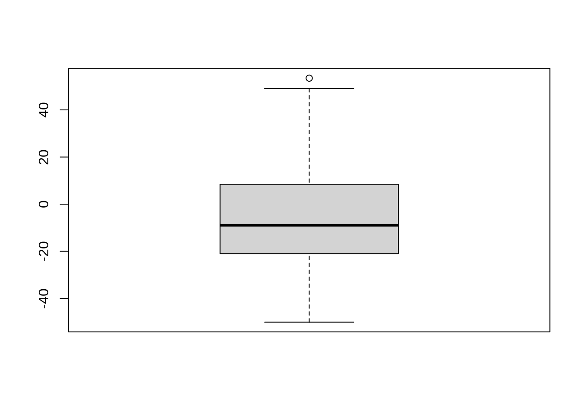
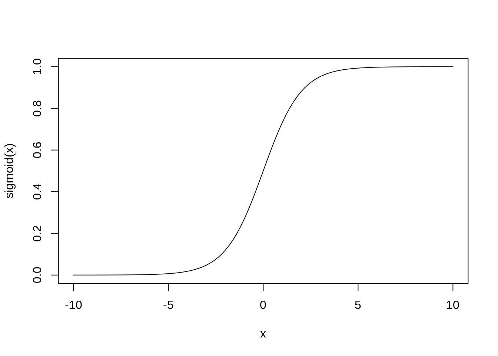
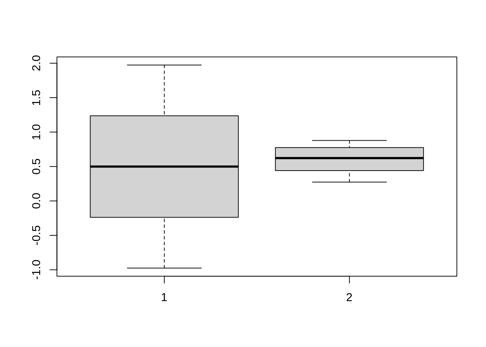

Agenda:
- Logistic regression
- Logistic regression with torch
- Classification using Neural Netoworks
Packages we will require this week
\[ \boxed{y = \beta_0 + \beta_1 x_1 + \dots \beta_p x_p} \]
looking at different loss functions:
Least-squares: \[ L(\beta) = \sum_{i=1}^n \| y_i - \beta_0 - \beta_1 x_1 - \dots - \beta_p x_p\|^2 \]
Penalized least squares/LASSO:
\[ L(\beta) = \sum_{i=1}^n \| y_i - \beta_0 - \beta_1 x_1 - \dots - \beta_p x_p\|^2 + \lambda \|{\beta}\|_1 \]
Classification
We will be using the following dataset for the examples here
Breast cancer dataset: This dataset contains measurements of various characteristics of breast cancer cells, with the goal of predicting whether a tumor is benign or malignant.
url <- "https://archive.ics.uci.edu/ml/machine-learning-databases/breast-cancer-wisconsin/wdbc.data"
col_names <- c("id", "diagnosis", paste0("feat", 1:30))
df <- read_csv(
url, col_names, col_types = cols()
) %>%
select(-id) %>%
mutate(outcome = ifelse(diagnosis == "M", 1, 0)) %>%
select(-diagnosis)head(df)# A tibble: 6 × 31
feat1 feat2 feat3 feat4 feat5 feat6 feat7 feat8 feat9 feat10 feat11 feat12
<dbl> <dbl> <dbl> <dbl> <dbl> <dbl> <dbl> <dbl> <dbl> <dbl> <dbl> <dbl>
1 18.0 10.4 123. 1001 0.118 0.278 0.300 0.147 0.242 0.0787 1.10 0.905
2 20.6 17.8 133. 1326 0.0847 0.0786 0.0869 0.0702 0.181 0.0567 0.544 0.734
3 19.7 21.2 130 1203 0.110 0.160 0.197 0.128 0.207 0.0600 0.746 0.787
4 11.4 20.4 77.6 386. 0.142 0.284 0.241 0.105 0.260 0.0974 0.496 1.16
5 20.3 14.3 135. 1297 0.100 0.133 0.198 0.104 0.181 0.0588 0.757 0.781
6 12.4 15.7 82.6 477. 0.128 0.17 0.158 0.0809 0.209 0.0761 0.334 0.890
# … with 19 more variables: feat13 <dbl>, feat14 <dbl>, feat15 <dbl>,
# feat16 <dbl>, feat17 <dbl>, feat18 <dbl>, feat19 <dbl>, feat20 <dbl>,
# feat21 <dbl>, feat22 <dbl>, feat23 <dbl>, feat24 <dbl>, feat25 <dbl>,
# feat26 <dbl>, feat27 <dbl>, feat28 <dbl>, feat29 <dbl>, feat30 <dbl>,
# outcome <dbl>The problem with linear regression for binary responses
Let’s start by looking at an example. Imagine we have a dataset with a binary response variable (0 or 1) and a continuous predictor variable. We might be tempted to use linear regression with the lm() function to model the relationship between the predictor and response variables. After all, linear regression is a powerful and flexible tool that can be used to model a wide range of relationships between variables.
However, when we use linear regression with a binary response variable, we quickly run into a problem. The linear regression model will give us a predicted value for the response variable for any given value of the predictor variable, but this predicted value is not a probability. The predicted value can take on any value between 0 and 1, but it doesn’t necessarily represent the probability of the response variable being a 1.
To see why this is a problem, consider the following scenario. Suppose we have a dataset with a binary response variable and a continuous predictor variable. We fit a linear regression model to the data using the lm() function in R, and we get a predicted value of 0.8 for the response variable when the predictor variable has a value of 1.5. What does this predicted value of 0.8 actually mean?
If we interpret the predicted value as a probability, we might conclude that the probability of the response variable being a 1 when the predictor variable has a value of 1.5 is 0.8. But this interpretation is incorrect. The predicted value from linear regression is not a probability, and it can take on values greater than 1 or less than 0.
reg_model <- lm(outcome ~ ., df)
summary(reg_model)
Call:
lm(formula = outcome ~ ., data = df)
Residuals:
Min 1Q Median 3Q Max
-0.60241 -0.16209 -0.02705 0.12982 0.82295
Coefficients:
Estimate Std. Error t value Pr(>|t|)
(Intercept) -2.0218117 0.4280072 -4.724 2.96e-06 ***
feat1 -0.2177721 0.1735089 -1.255 0.209985
feat2 0.0045455 0.0079439 0.572 0.567426
feat3 0.0237399 0.0250985 0.946 0.344641
feat4 0.0003178 0.0005253 0.605 0.545391
feat5 0.0846891 2.0172759 0.042 0.966529
feat6 -4.2220353 1.3336803 -3.166 0.001635 **
feat7 1.3979973 1.0458611 1.337 0.181887
feat8 2.1418330 1.9791819 1.082 0.279657
feat9 0.1027092 0.7427382 0.138 0.890067
feat10 0.0332616 5.5722693 0.006 0.995240
feat11 0.4349559 0.3104682 1.401 0.161800
feat12 -0.0067585 0.0368439 -0.183 0.854525
feat13 -0.0225203 0.0411183 -0.548 0.584129
feat14 -0.0009232 0.0013978 -0.660 0.509235
feat15 15.8543207 6.6248737 2.393 0.017046 *
feat16 0.0649034 2.1694829 0.030 0.976145
feat17 -3.5654680 1.3007522 -2.741 0.006327 **
feat18 10.5679513 5.4520354 1.938 0.053103 .
feat19 1.6973407 2.7276006 0.622 0.534019
feat20 -7.1464402 11.6764096 -0.612 0.540769
feat21 0.1951831 0.0579677 3.367 0.000814 ***
feat22 0.0071594 0.0069489 1.030 0.303339
feat23 -0.0024351 0.0059360 -0.410 0.681807
feat24 -0.0010112 0.0003197 -3.163 0.001648 **
feat25 0.5428569 1.4346393 0.378 0.705288
feat26 0.0671583 0.3830830 0.175 0.860902
feat27 0.3811912 0.2686173 1.419 0.156453
feat28 0.4643099 0.9142253 0.508 0.611751
feat29 0.5567875 0.4943014 1.126 0.260493
feat30 4.3034831 2.3832134 1.806 0.071517 .
---
Signif. codes: 0 '***' 0.001 '**' 0.01 '*' 0.05 '.' 0.1 ' ' 1
Residual standard error: 0.2362 on 538 degrees of freedom
Multiple R-squared: 0.7743, Adjusted R-squared: 0.7617
F-statistic: 61.53 on 30 and 538 DF, p-value: < 2.2e-16n <- 100
new_patients <- data.frame(matrix(rnorm(30 * n), nrow = n))
colnames(new_patients) <- paste0("feat", 1:30)
new_predictions <- predict(reg_model, newdata = new_patients, type = "response")new_predictions %>% head() 1 2 3 4 5 6
-24.194945 -19.214384 28.100228 -24.331809 -5.793916 -12.648794 boxplot(new_predictions)
\[ \newcommand{\logodds}{\mathop{\log\text{-odds}}} \]
\[ \begin{aligned} \logodds(p(x)) = b_0 + b_1 x\\ \\ \\ \\ p(x) = \frac{1}{1 + \exp(\beta_0 + \beta_1 x)} \end{aligned} \]
The need for logistic regression
So, what do we do when we have a binary response variable and we want to model the relationship between the predictor and response variables? This is where logistic regression comes in. Logistic regression is a type of generalized linear model that is specifically designed for binary response variables.
The main idea behind logistic regression is to transform the predicted values from linear regression so that they represent probabilities. We do this using a function called the logistic function, which maps any value between negative infinity and positive infinity to a value between 0 and 1. The logistic function is a sigmoidal curve that looks like an elongated S-shape. By applying the logistic function to the predicted values from linear regression, we can transform them into probabilities that represent the probability of the response variable being a 1.
In the next section, we’ll dive into the details of logistic regression and see how it works in practice using the breast cancer dataset.
Odds and odds ratios
Let’s start by defining the odds of an event occurring. The odds of an event occurring are defined as the probability of the event occurring divided by the probability of the event not occurring. For example, if the probability of a basketball team winning a game is 0.6, then the odds of the team winning the game are 0.6/0.4 = 1.5.
Odds ratios are a way to compare the odds of an event occurring between two different groups. The odds ratio is defined as the ratio of the odds of an event occurring in one group to the odds of the event occurring in another group. For example, if the odds of a basketball team winning a game are 1.5 in one group and 2.0 in another group, then the odds ratio of the first group to the second group is 1.5/2.0 = 0.75.
set.seed(123)
binary_var <- rbinom(100, size = 1, prob = 0.6)
group_var <- sample(1:2, size = 100, replace = TRUE)
odds_group1 <- sum(binary_var[group_var == 1]) / sum(!binary_var[group_var == 1])
odds_group2 <- sum(binary_var[group_var == 2]) / sum(!binary_var[group_var == 2])
odds_ratio <- odds_group1 / odds_group2
cat(paste("Odds group 1:", round(odds_group1, 2), "\n"))Odds group 1: 1.3 cat(paste("Odds group 2:", round(odds_group2, 2), "\n"))Odds group 2: 1.7 cat(paste("Odds ratio:", round(odds_ratio, 2), "\n"))Odds ratio: 0.76 Logistic regression model
Now let’s move on to the logistic regression model. The logistic regression model is a type of generalized linear model that models the probability of an event occurring as a function of one or more predictor variables. The logistic regression model uses the logistic function, also known as the sigmoid function, to model the relationship between the predictor variables and the probability of the event occurring.
The sigmoid function is given as follows
\[ \sigma(x) = \frac{1}{1 + e^{-x}} \]
sigmoid <- \(x) 1 / (1 + exp(-x))
curve(sigmoid, -10, 10, ylab="sigmoid(x)")
In logistic regression, the underlying model is assumed to be of the form
\[ \boxed{p(x) = \sigma\Big(\beta_0 + \beta_1 x\Big) = \frac{1}{1 + \exp({-\beta_0 - \beta_1 x})}} \]
where \(p(x)\) where is the probability of the event occurring given the value of the predictor variable \(x\), and \(b0\) and \(b1\) are the intercept and slope coefficients of the logistic regression model, respectively.
\(p(x)\) is gauranteed to be a probability for all values of \(x\).
Notice how this is similar to linear regression which has \[ y(x) = \beta_0 + \beta_1 x \]
The logistic function has an S-shaped curve and maps any real-valued input to a probability between 0 and 1. As such, the logistic regression model is well-suited for modeling binary response variables, where the goal is to predict the probability of an event occurring (e.g., whether a customer will buy a product or not).m
Logistic regression example
The glm() function fits a generalized linear model, which includes logistic regression as a special case.
set.seed(123)
x <- rnorm(1000)
y <- rbinom(1000, size = 1, prob = exp(0.5 + 0.8*x)/(1 + exp(0.5 + 0.8*x)))y %>% head()[1] 1 1 1 1 1 1model <- glm(y ~ x, family = binomial())
summary(model)
Call:
glm(formula = y ~ x, family = binomial())
Deviance Residuals:
Min 1Q Median 3Q Max
-2.1935 -1.1691 0.6904 0.9635 1.8280
Coefficients:
Estimate Std. Error z value Pr(>|z|)
(Intercept) 0.49917 0.06916 7.218 5.29e-13 ***
x 0.73716 0.07696 9.578 < 2e-16 ***
---
Signif. codes: 0 '***' 0.001 '**' 0.01 '*' 0.05 '.' 0.1 ' ' 1
(Dispersion parameter for binomial family taken to be 1)
Null deviance: 1335.7 on 999 degrees of freedom
Residual deviance: 1228.5 on 998 degrees of freedom
AIC: 1232.5
Number of Fisher Scoring iterations: 4x_test <- -5.5
sigmoid(coef(model)[1] + coef(model)[2] * x_test)(Intercept)
0.02778092 predict(model, newdata = data.frame(x=x_test), type="response") 1
0.02778092 new_x <- seq(-2, 2, by = 0.1)
p1 <- predict(model, data.frame(x=new_x))
p2 <- predict(model, data.frame(x=new_x), type="response")boxplot(p1, p2)
Logistic regression for breast cancer
Let’s start by fitting a logistic regression model to the breast cancer dataset using the glm() function in R.
df <- df %>% mutate_at("outcome", factor)model <- glm(outcome ~ ., data = df, family = binomial())Warning: glm.fit: algorithm did not convergeWarning: glm.fit: fitted probabilities numerically 0 or 1 occurredsummary(model)
Call:
glm(formula = outcome ~ ., family = binomial(), data = df)
Deviance Residuals:
Min 1Q Median 3Q Max
-8.49 -8.49 -8.49 8.49 8.49
Coefficients:
Estimate Std. Error z value Pr(>|z|)
(Intercept) -2.881e+06 2.816e+05 -10.233 < 2e-16 ***
feat1 2.427e+06 2.693e+05 9.014 < 2e-16 ***
feat2 1.958e+05 1.471e+04 13.313 < 2e-16 ***
feat3 1.473e+06 2.464e+04 59.791 < 2e-16 ***
feat4 -1.301e+05 3.907e+03 -33.301 < 2e-16 ***
feat5 -1.525e+08 8.361e+06 -18.234 < 2e-16 ***
feat6 -6.428e+06 3.213e+06 -2.001 0.04540 *
feat7 1.042e+06 1.408e+06 0.740 0.45959
feat8 -1.716e+07 5.382e+06 -3.188 0.00143 **
feat9 4.049e+07 7.772e+05 52.093 < 2e-16 ***
feat10 -4.233e+07 2.169e+06 -19.519 < 2e-16 ***
feat11 3.328e+07 1.169e+06 28.478 < 2e-16 ***
feat12 6.368e+06 2.005e+05 31.763 < 2e-16 ***
feat13 1.701e+06 4.720e+04 36.032 < 2e-16 ***
feat14 -6.393e+05 1.835e+04 -34.840 < 2e-16 ***
feat15 7.492e+08 1.224e+07 61.213 < 2e-16 ***
feat16 -1.773e+08 5.732e+06 -30.931 < 2e-16 ***
feat17 1.529e+08 5.340e+06 28.624 < 2e-16 ***
feat18 -1.260e+09 4.012e+07 -31.398 < 2e-16 ***
feat19 2.890e+08 4.126e+06 70.054 < 2e-16 ***
feat20 1.512e+09 6.597e+07 22.921 < 2e-16 ***
feat21 -6.130e+06 2.143e+05 -28.606 < 2e-16 ***
feat22 -5.832e+05 2.437e+04 -23.935 < 2e-16 ***
feat23 -3.538e+05 1.219e+04 -29.023 < 2e-16 ***
feat24 8.950e+04 2.741e+03 32.657 < 2e-16 ***
feat25 -2.161e+07 3.298e+06 -6.553 5.66e-11 ***
feat26 8.986e+06 3.999e+05 22.470 < 2e-16 ***
feat27 -3.028e+07 1.523e+06 -19.875 < 2e-16 ***
feat28 1.431e+08 5.471e+06 26.162 < 2e-16 ***
feat29 -2.474e+07 3.392e+05 -72.923 < 2e-16 ***
feat30 -3.698e+07 5.340e+06 -6.926 4.33e-12 ***
---
Signif. codes: 0 '***' 0.001 '**' 0.01 '*' 0.05 '.' 0.1 ' ' 1
(Dispersion parameter for binomial family taken to be 1)
Null deviance: 751.44 on 568 degrees of freedom
Residual deviance: 32006.76 on 538 degrees of freedom
AIC: 32069
Number of Fisher Scoring iterations: 25The output of the summary() function provides a summary of the model, including the coefficients of each predictor, their standard errors, and the corresponding p-values. The coefficients represent the log odds ratio of the response variable for each predictor. We can exponentiate the coefficients to get the odds ratios:m
new_patient <- data.frame(matrix(rnorm(30), nrow = 1))
names(new_patient) <- paste0("feat", 1:30)
predict(model, newdata = new_patient, type = "response") 1
2.220446e-16 Redo logistic regression, but this time using the torch library
Now that we have the torch library installed, we can perform logistic regression using the following steps:
- Convert the data to a tensor
- Define the model architecture
- Define the loss function
- Define the optimizer
- Train the model
- Make predictions
X <- cbind(x)
x_tensor <- torch_tensor(X, dtype = torch_float())
y_tensor <- torch_tensor(y, dtype = torch_float())module <- nn_module(
initialize = function() {
self$fc1 <- nn_linear(1, 1)
self$fc2 <- nn_sigmoid()
},
forward = function(x) {
x %>%
self$fc1() %>%
self$fc2()
}
)logistic_reg <- module()y_pred <- logistic_reg(x_tensor)
head(y_pred)torch_tensor
0.3020
0.3322
0.5147
0.3610
0.3668
0.5312
[ CPUFloatType{6,1} ][ grad_fn = <SliceBackward0> ]Question: What is an appropriate loss function?
L <- function(x, y, model){
y_pred <- model(x)
return (mean((y_pred - y)^2))
}logistic_reg_1 <- module()
L(x_tensor, y_tensor, logistic_reg_1)torch_tensor
0.256371
[ CPUFloatType{} ][ grad_fn = <MeanBackward0> ]Optimization
logistic_reg_1$parameters$fc1.weight
torch_tensor
-0.6241
[ CPUFloatType{1,1} ][ requires_grad = TRUE ]
$fc1.bias
torch_tensor
0.4717
[ CPUFloatType{1} ][ requires_grad = TRUE ]optimizer <- optim_adam(logistic_reg_1$parameters, lr=0.01)
epochs <- 200
for (i in 1:epochs){
loss <- L(x_tensor, y_tensor, logistic_reg_1)
optimizer$zero_grad()
loss$backward()
optimizer$step()
if (i %% 20 == 0) {
cat(sprintf("Epoch: %d, Loss: %.4f\n", i, loss$item()))
}
}Epoch: 20, Loss: 0.2473
Epoch: 40, Loss: 0.2411
Epoch: 60, Loss: 0.2383
Epoch: 80, Loss: 0.2375
Epoch: 100, Loss: 0.2375
Epoch: 120, Loss: 0.2375
Epoch: 140, Loss: 0.2375
Epoch: 160, Loss: 0.2375
Epoch: 180, Loss: 0.2375
Epoch: 200, Loss: 0.2375logistic_reg_1$parameters$fc1.weight
torch_tensor
1e-05 *
-7.1680
[ CPUFloatType{1,1} ][ requires_grad = TRUE ]
$fc1.bias
torch_tensor
0.4557
[ CPUFloatType{1} ][ requires_grad = TRUE ]Logistic loss function
a.k.a. Binary cross entropy nn_bce()
nn_bce_loss()An `nn_module` containing 0 parameters.L2 <- function(x, y, model){
nn_bce_loss()(model(x), y)
}
logistic_reg_2 <- module()
L2(x_tensor, y_tensor, logistic_reg_2)torch_tensor
0.614968
[ CPUFloatType{} ][ grad_fn = <BinaryCrossEntropyBackward0> ]Optimization
logistic_reg_2$parameters$fc1.weight
torch_tensor
0.6445
[ CPUFloatType{1,1} ][ requires_grad = TRUE ]
$fc1.bias
torch_tensor
0.4886
[ CPUFloatType{1} ][ requires_grad = TRUE ]optimizer <- optim_adam(logistic_reg_2$parameters, lr=0.01)
epochs <- 200
for (i in 1:epochs){
loss <- L2(x_tensor, y_tensor, logistic_reg_2)
optimizer$zero_grad()
loss$backward()
optimizer$step()
if (i %% 20 == 0) {
cat(sprintf("Epoch: %d, Loss: %.4f\n", i, loss$item()))
}
}Epoch: 20, Loss: 0.6143
Epoch: 40, Loss: 0.6142
Epoch: 60, Loss: 0.6142
Epoch: 80, Loss: 0.6142
Epoch: 100, Loss: 0.6142
Epoch: 120, Loss: 0.6142
Epoch: 140, Loss: 0.6142
Epoch: 160, Loss: 0.6142
Epoch: 180, Loss: 0.6142
Epoch: 200, Loss: 0.6142logistic_reg_2$parameters$fc1.weight
torch_tensor
0.7372
[ CPUFloatType{1,1} ][ requires_grad = TRUE ]
$fc1.bias
torch_tensor
0.4992
[ CPUFloatType{1} ][ requires_grad = TRUE ]Comparisons
The first model minimizes L
c(
L(x_tensor, y_tensor, logistic_reg_1),
L(x_tensor, y_tensor, logistic_reg_2)
)[[1]]
torch_tensor
0.237456
[ CPUFloatType{} ][ grad_fn = <MeanBackward0> ]
[[2]]
torch_tensor
0.261907
[ CPUFloatType{} ][ grad_fn = <MeanBackward0> ]The second model minimizes L2
c(
L2(x_tensor, y_tensor, logistic_reg_1),
L2(x_tensor, y_tensor, logistic_reg_2)
)[[1]]
torch_tensor
0.667856
[ CPUFloatType{} ][ grad_fn = <BinaryCrossEntropyBackward0> ]
[[2]]
torch_tensor
0.614227
[ CPUFloatType{} ][ grad_fn = <BinaryCrossEntropyBackward0> ]How do they both compare in terms of their accuracy?
expected <- as_array(y_tensor)
predictions_1 <- ifelse(logistic_reg_1(x_tensor) < 0.5, 0, 1)
predictions_2 <- ifelse(logistic_reg_2(x_tensor) < 0.5, 0, 1)This is the table of _expected values vs actual predictions made by the first model
table(expected, predictions_1) predictions_1
expected 1
0 388
1 612This is the table of expected values vs actual predictions made by the second model
table(expected, predictions_2) predictions_2
expected 0 1
0 143 245
1 94 518We can see that using nn_bce_loss() does a much better job at predicting the expected values.